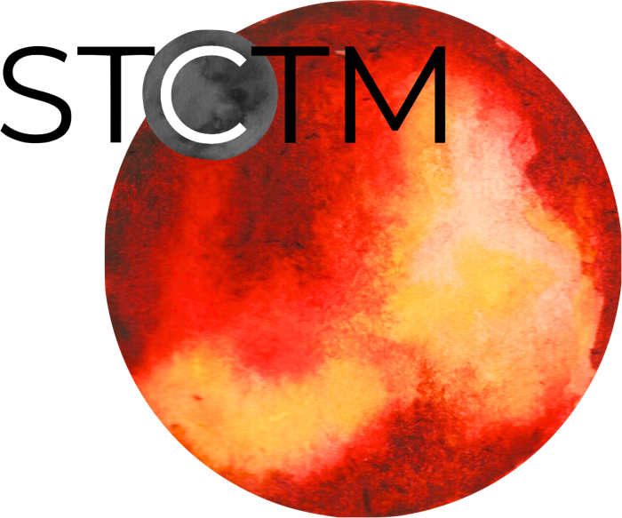
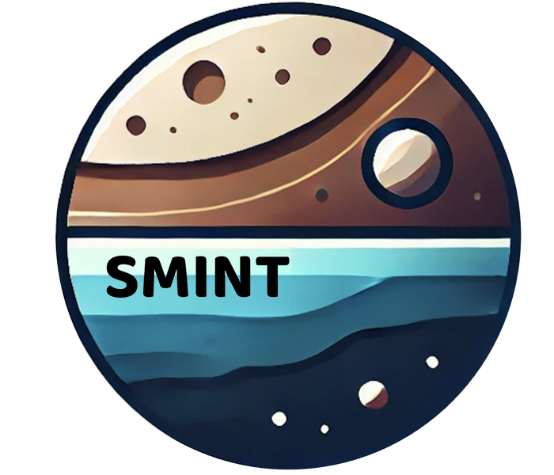
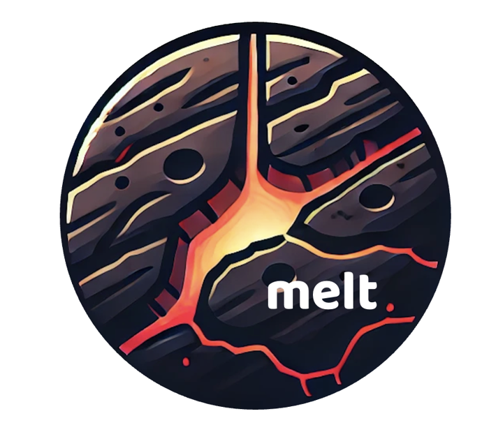

Pythonstctm
Stellar contamination modeling and retrievals for exoplanet transmission spectra.

PythonStellar contamination modeling and retrievals for exoplanet transmission spectra.

PythonBayesian inference of sub-Neptune compositions from static and evolutionary models.

PythonAssesses whether eccentricity tides could support long-lived volcanic activity on small rocky planets.
End-to-end community JWST data reduction and analysis pipeline.
I am a major contributor to its light-curve extraction and fitting stages.
ttv-fwd
Forward transit-timing variation (TTV) models for multi-planet systems, built on TTVFast.